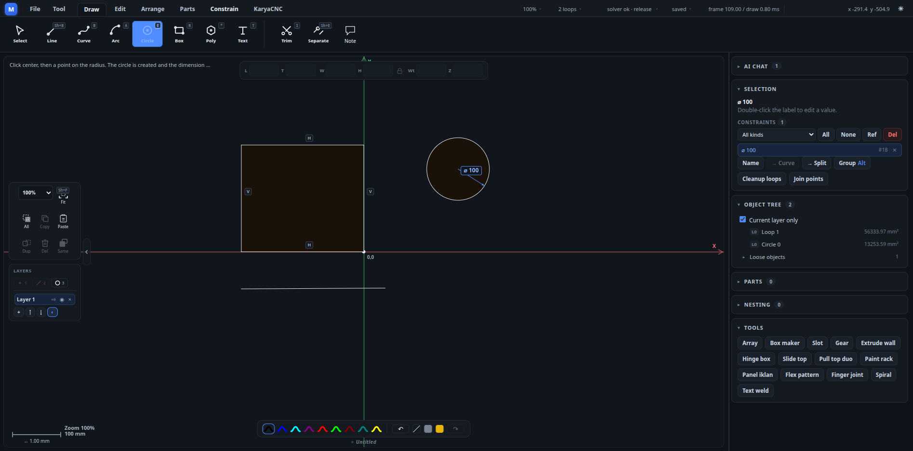

Tab Constrain — Batasan & Dimensi
Pilih geometri atau titik, lalu terapkan batasan (constraint) agar geometri mematuhi aturan tertentu. Dimensi menggerakkan sketsa agar sesuai nilai yang diinginkan.

1. Constraint geometri
| Pintasan | Constraint | Keterangan |
|---|---|---|
| O | Coincident / Berimpit | Dua titik menjadi satu lokasi. |
| H / V | Horizontal / Vertikal | Garis atau pasangan titik sejajar sumbu X/Y. |
| P | Parallel / Sejajar | Dua garis sejajar. |
| [ | Perpendicular / Tegak lurus | Dua garis bersudut 90°. |
| Q | Equal / Sama panjang | Dua objek sama panjang. |
| . | Anchor / Jangkar | Titik tidak dapat bergerak (dikunci ke dunia). |
| M | Midpoint / Titik tengah | Titik berada di tengah segmen. |
| T | Tangent / Menyinggung | Garis/busur menyentuh lengkungan tanpa memotong. |
| F | Fillet | Membuat sudut melengkung. |
| J | Join points | Menyambung titik yang bersentuh. |
| Alt+T | Mate part (perakitan) | Gabungkan dua part (lihat halaman Parts). |
2. Dimensi
Dimensi penggerak (D)
Menambah dimensi yang meminta nilai. Sketsa kemudian diselesaikan agar sesuai. Ketik angka atau rumus (100*2, 150%). Pilih dimensi lalu tekan Enter untuk mengedit.
Measure / Referensi (Shift+D)
Hanya mengukur, tidak menggerakkan apa pun. Nilai ditampilkan dalam tanda kurung. Cocok untuk cek ukuran tanpa mengubah geometri.
Pilih dimensi lalu tekan Shift+E untuk berpindah antara penggerak dan referensi.
Strip L / T / W / H
Strip mengambang di atas kanvas langsung mengatur batas (left, top, width, height) dari pilihan. Klik ikon gembok kecil di sebelahnya untuk menjaga proporsi saat diubah ukuran.
3. Solver mode
Default solver berjalan saat dilepas (on release): drag tidak memicu solve, satu solve dijalankan saat mouse dilepas. Ubah mode dengan klik chip solver di baris status ribbon:
- Manual: hanya F9 yang solve.
- Live: solve setiap gerakan (perilaku lama).
- F9 selalu solve segera, apa pun mode.